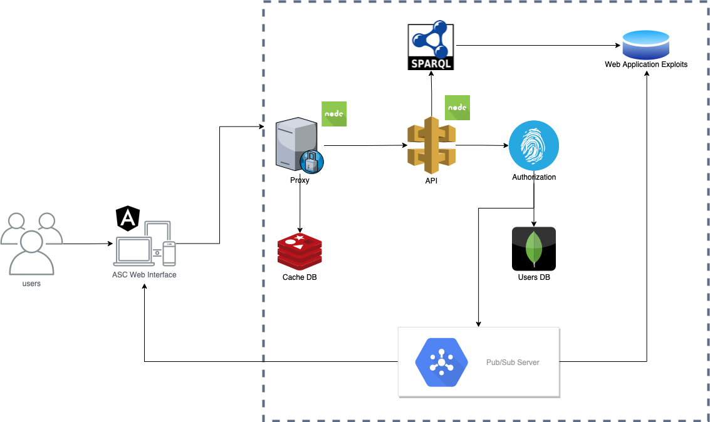

ASC (Application Security Control) is a web platform able to offer real-time alerts about new security issues for a specific class of software like CMS, frameworks, modules, shopping cart managers, etc.
We wish to develop a smart platform which will be able to provide an innovative mean to find the most dangerous vulnerabilities on the web, in order to be up to date with the latest fixes and patches. Or secondary goal is to facilitate the process through which our users can learn how to prevent an eventual attack, how to determine if they are scammed and how to fix a possible vulnerability. All of the provided functionalities are presented in a user-friendly maner through a web interface, whilst offerint a powerful tool not only for experienced developers but also for rookies.
The code can be accessed here.
In the first section we briefly described the main goals of the application. The architecture has two main components: a front-end part, for the client interaction, built over Angular framework and a back-end component implemented in NodeJs, designed following a few well known paradigms and hosted by using various resources provided by the AWS Cloud Platform. These two components will communicate over the HTTP protocol, using the JSON and its extension JSON-LD as the established data exchange format. The client will build JSON requests to send requests toward the backend component, while the received responses will be in the JSON-LD format. In the frontend implementation, we'll have a module for JSON-LD to HTML+RDFa, in order to have semantic data encoded right in our single page application.
The web services conglomerate provides a variety of functionalities, such as getting a list containg the latest vulnerabilities, finding the most suitable fix or patch for a certain vulnerability and real-time notifications about new vulnerabilities found and an endpoint via SPARQL to provide various solution to prevent and/or eradicate such security incidents. More details about each component's particular behaviour can be seen in the corresponding sections from below.
 ASC ArchitectureThe Back-end Component Architecture is built over 'REST' paradigm.
REST or REpresentational State Transfer, is an architectural style for providing standards between computer systems on the web, making it easier for systems to communicate with each other. REST-compliant systems, often called RESTful systems, are characterized by how they are stateless and separate the concerns of client and server.
This module is composed of the following components:
As a summary, the API offer the main functionalities, being the core elements of our architecture provides an unique point of access for the web client. The API communicate with data sources represented as ontologies for vulnerabilities. The query language for accessing the datasources is SparQL and the communication contract established between the client and the services provider is a mix between JSON (used for request) and JSON-LD (sent through responses).
The user interface will be created using the Angular framework combined with Material Design, which is ideal for building single-page applications. Angular Material is an implementation of Google's Material Design Specification (2014-2017). This project provides a set of reusable, well-tested, and accessible UI components for AngularJS developers. The web interface will be hosted in Netlify, in order to communicate easily with the other components of the project. The data which is used to populate the web page in specific context is received either in the JSON format or its extension JSON-LD. For the latter, we'll use a parser to transform it in HTML+RDFa format, which will be loaded into the page using custom built Angular directives.